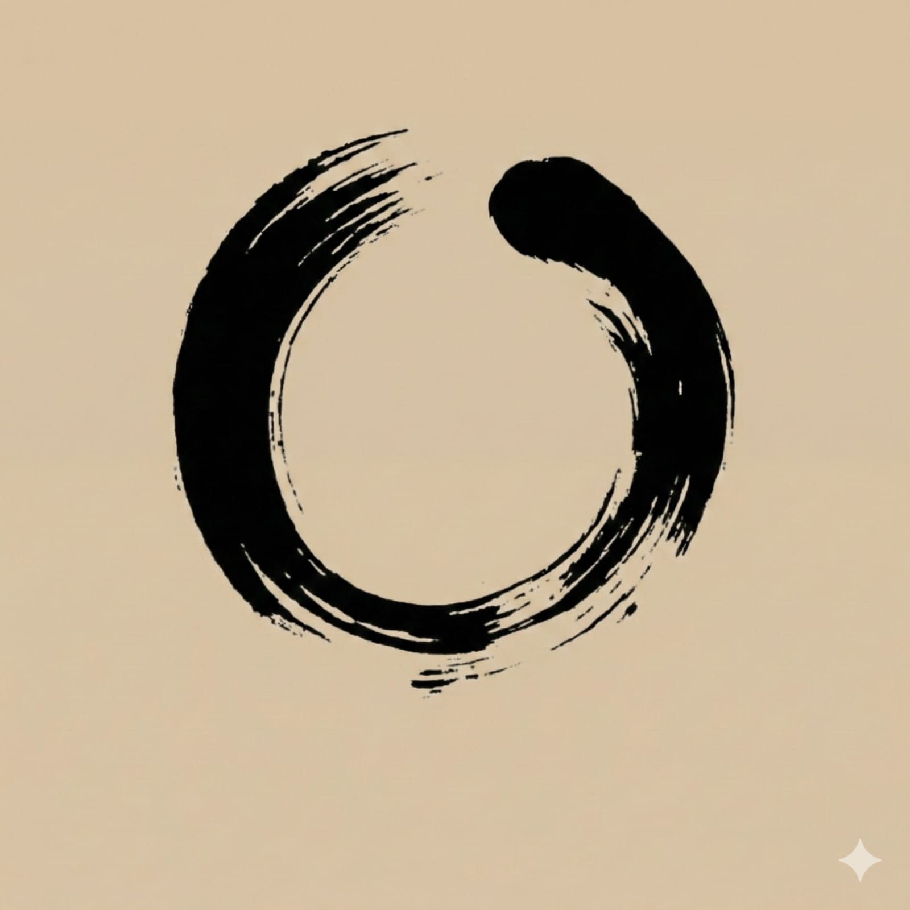
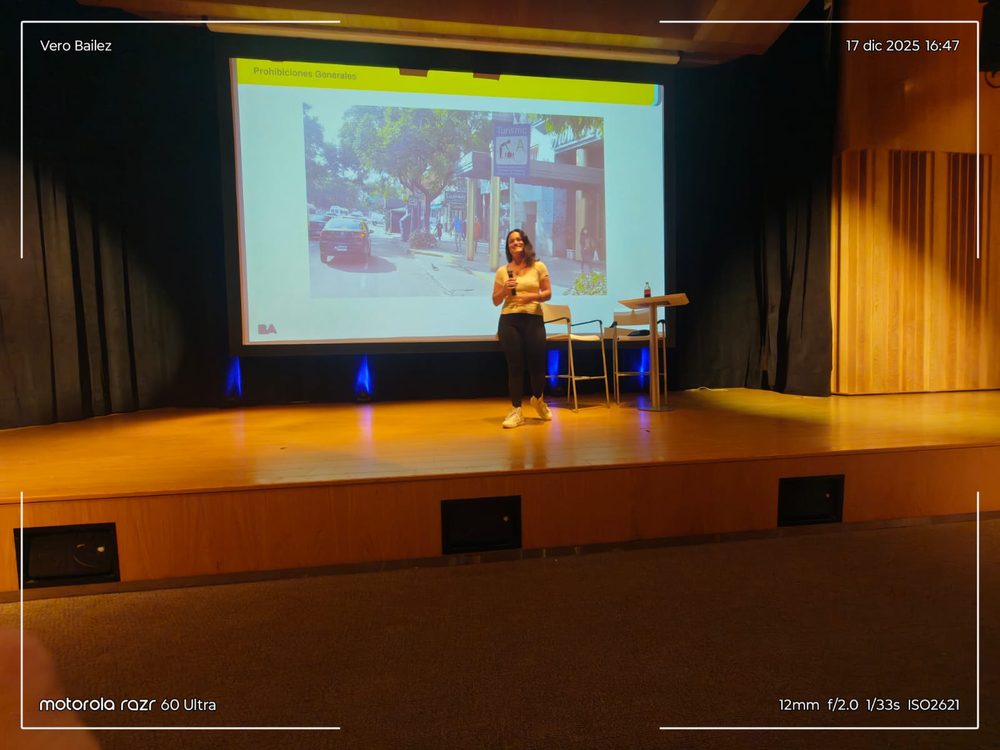
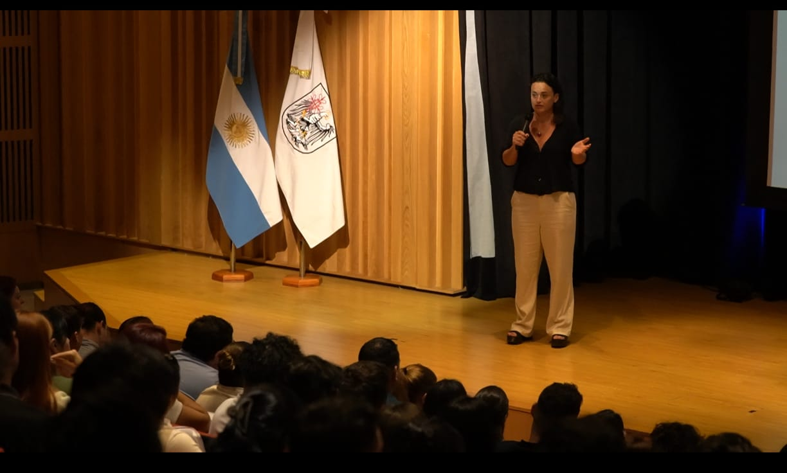
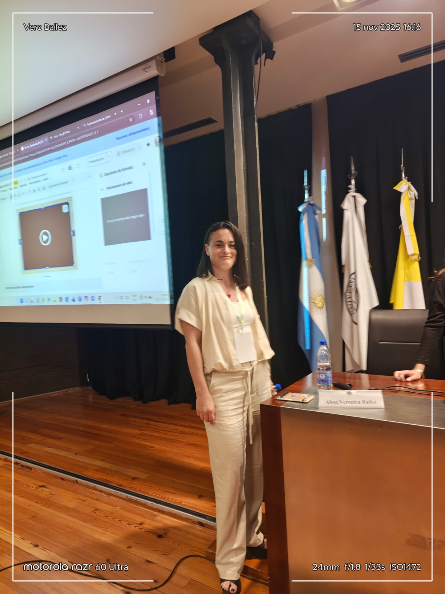
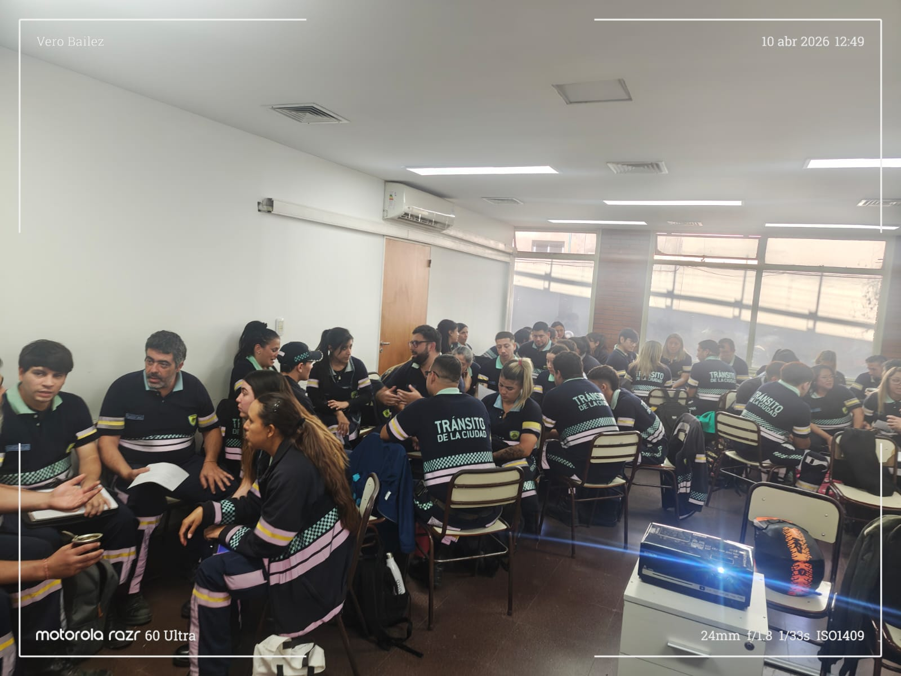
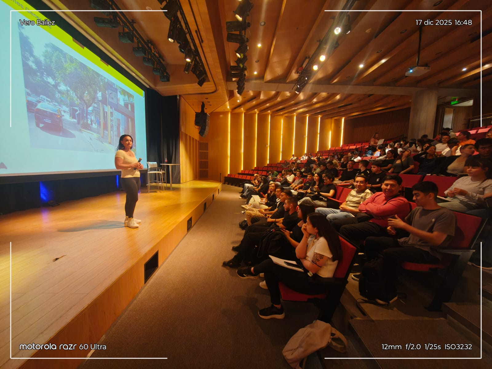
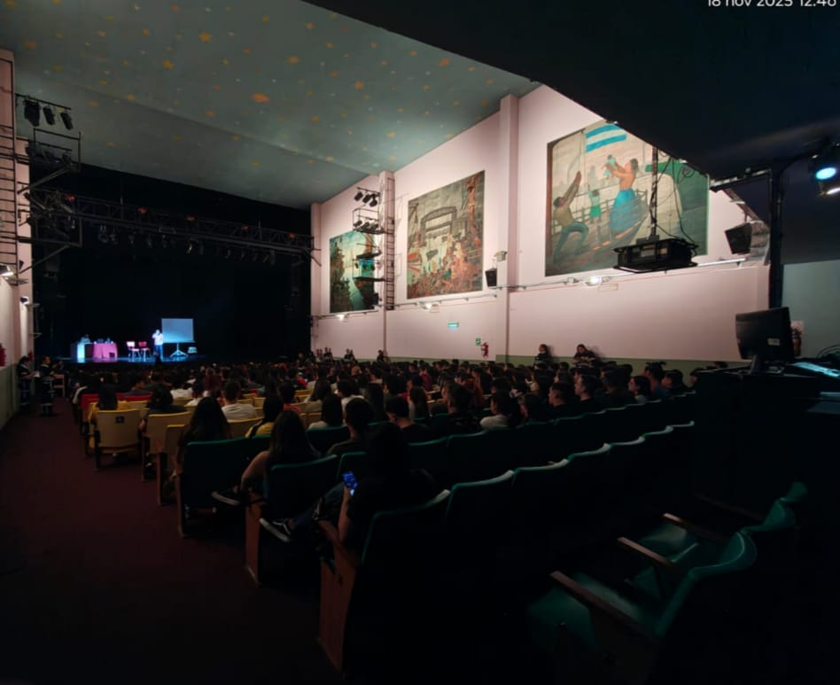
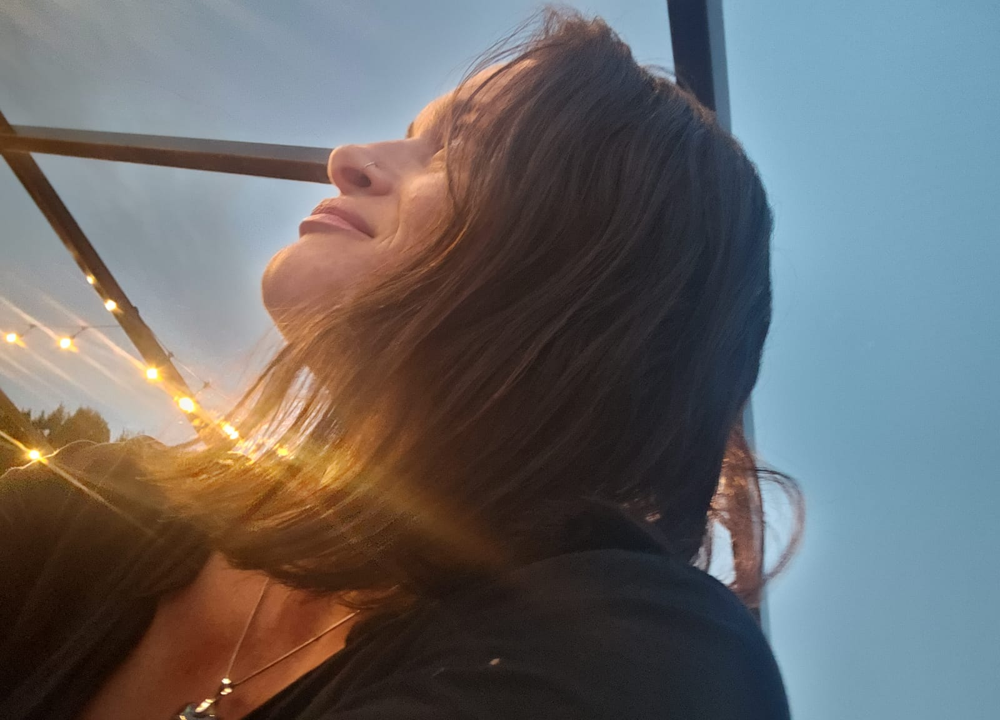
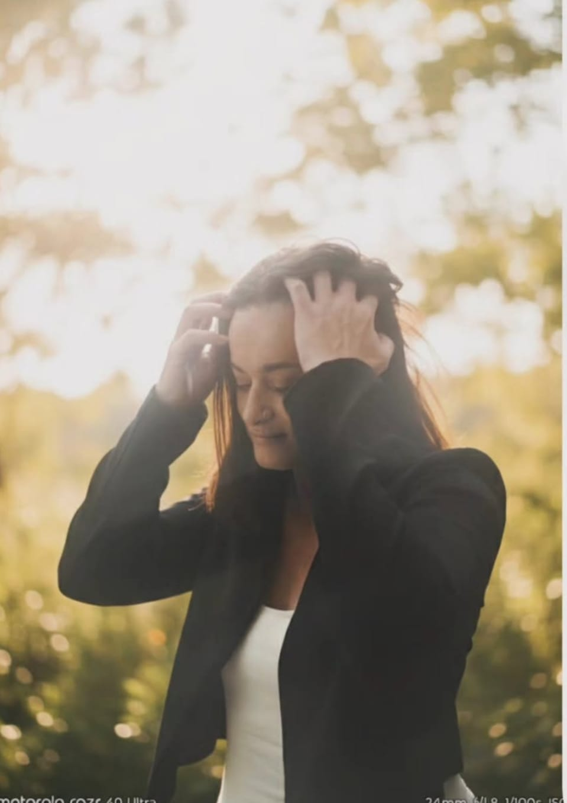

Pensamiento estratégico para decidir
en escenarios complejos
Revisar el marco · Diseñar el próximo movimiento
Genesia es un espacio de pensamiento estratégico para personas y organizaciones que necesitan revisar su marco de decisión en momentos de cambio, tensión o replanteo profundo.
No propone recetas rápidas. Trabaja sobre la estructura interna desde la cual se lee la realidad, se perciben las opciones y se toman decisiones. Esa estructura puede ser revisada. Puede ser reconfigurada.
Antes de decidir qué hacer, hay que entender desde dónde se está decidiendo.
Teoría de la Libertad Estructural
Entre lo que ocurre y lo que hacemos existe una estructura. Esa estructura no es fija ni dada — es el conjunto de marcos, narrativas y disposiciones desde los que operamos. Genesia trabaja en ese espacio: el único donde la transformación real es posible.

Buenos Aires · 2025
Identificar los marcos desde los cuales se está interpretando la situación. El problema visible no siempre es el problema real.
Ampliar el rango de lo que se percibe como posible. La saturación de opciones paraliza tanto como su ausencia. El trabajo es estructural.
Diseñar cursos de acción que sean coherentes con la estructura revisada. No gestión de síntomas: criterio para decidir bien.
Acompañamiento estratégico para líderes, equipos y organizaciones que necesitan pensar mejor sus decisiones antes de actuar.
Módulo I
Lectura sistémica de la situación. Identificación de los marcos que están condicionando la lectura del problema y el rango de respuestas disponibles.
Módulo II
Construcción de escenarios y diferenciación de trayectorias. Herramientas para decidir con criterio en contextos ambiguos o de alta complejidad.
Módulo III
Formación de líderes y supervisores en organizaciones que atraviesan cambio. De la ejecución al criterio: desarrollar capacidad de conducción real.





Genesia Empresas trabaja con organizaciones públicas y privadas, equipos directivos y mandos medios en procesos de formación, acompañamiento estratégico y desarrollo de liderazgo.
Consultar disponibilidad
Para personas que sienten que algo se agotó — un modelo de vida, una dirección, una forma de entenderse a sí mismas — y que necesitan pensar con profundidad antes de avanzar.
Para quienes sienten que seguir pensando igual ya no alcanza, pero tampoco buscan fórmulas externas.
No es terapia. No reemplaza tratamientos clínicos. Es un trabajo de pensamiento, claridad y conversación profunda en momentos de transición o replanteo.
El punto de partida no es el síntoma. Es la estructura desde la cual se está interpretando la situación. Desde ahí se trabaja.
Iniciar una conversaciónAbogada · Coach Ontológica · Pensadora estratégica
Más de veinte años en gestión pública en la Ciudad de Buenos Aires construyeron en Verónica algo que no se obtiene en un aula: la capacidad de leer organizaciones reales, personas reales, bajo presión real.
Ese recorrido — sumado a una formación filosófica profunda y una práctica sostenida del liderazgo — es la materia prima de Genesia. No un método importado. Una teoría elaborada desde adentro, con el rigor de quien sabe que las ideas tienen que poder probarse en la práctica.
La Teoría de la Libertad Estructural (TLE), el Método Genesia y los proyectos que lo expresan son el resultado de ese trabajo: años de pensar, aplicar, validar y escribir.
Abogada · Universidad Nacional de Lomas de Zamora
Coach de Equipos Certificada · Axon Training
Gestión pública · GCBA · +20 años
Publicada en · tres antologías literarias
Fundadora · Genesia · 2024

El primer paso es siempre una conversación.